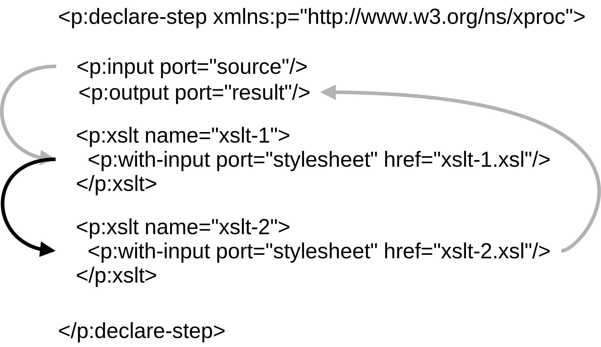

Head of research and development at the State and
University Library Hamburg
Liaison to digital humanities research at the University
of Hamburg and other higher education institutions.
Author of SchXslt, a modern implementation of the Schematron validation language
Member of the XProc.next community group
Agenda
What is XProc
XProc is a XML-based programming language for
complex data processing. It is comprised of a set of small,
sharp tools (steps) for creating and transforming XML and
other documents.
Version 1.0 has been around sind 2010, version 3.0 is
expected to be published as community report in late 2022.
Process input documents to different target formats
Orchestrate transformations, validations, and other document processing tasks
Data maintenance
Validate and modify a set of source documents over time
One-off error corrections
Setting up XProc 3.0 and MorganaXProc-III
The workshop material contains a runnable version of MorganaXProc-III in the bin/morgana folder.
Try to run it from the commandline!
The workshop material contains an <oXygen/> project that defines an XProc 3.0 document type.
Exercise 1
Run the pipeline 01-hello/pipeline.xpl
Anatomy of a simple pipeline
An XProc pipeline consists of one or more steps.
It has zero or more input ports, one beeing the primary
input port. An input port is a named source of
documents (data). By convention the primary input port is
named source.
It has zero or more output ports. one beeing the primary
output port. An output port is a named target for
documents (data). By convention the primary output port is
named result.
Both input and output ports may
have a boolean sequence attribute. When set
to true the port accepts a possibly empty
sequence of documents. The default value
is false.
<p:declare-step version="3.0"
xmlns:p="http://www.w3.org/ns/xproc"
xmlns:xs="http://www.w3.org/2001/XMLSchema">
<p:documentation>
This is a simple pipeline with one input port, one output port,
and one option.
</p:documentation>
<p:input port="source"/>
<p:output port="result"/>
<p:option name="name" as="xs:string" required="true"/>
<p:identity message="Hello {$name}! Just passing through!"/>
</p:declare-step>
The primary input port of your pipeline is connected to the
primary input port of the first step, the primary output port
connected to the primary output port of the last step.
Implicit port connections

The primary input port of your pipeline is connected to the
primary input port of the first step, the primary output port
connected to the primary output port of the last step.
When one step follows another and no explicit port connection
is present, the primary output port of the first step is
connected to the primary input port of the second step.
Port connections
For simple steps or pipelines implicit port connections are
sufficiant.
If a pipeline feeds a document to two independent steps, we
have to use explicit port connections.
Connecting ports: Explicit
You can explicitly connect the input ports of a step:
...to a specific output port of another step (@pipe)
The order in which steps are executed is defined by their
port connections, not by their order in a pipeline.
This is true of implicit port connections as well: The order
of steps in the pipeline defines their implicit connections such
that the steps are executed in document order.
Steps that don't depend on another are executed in no defined order